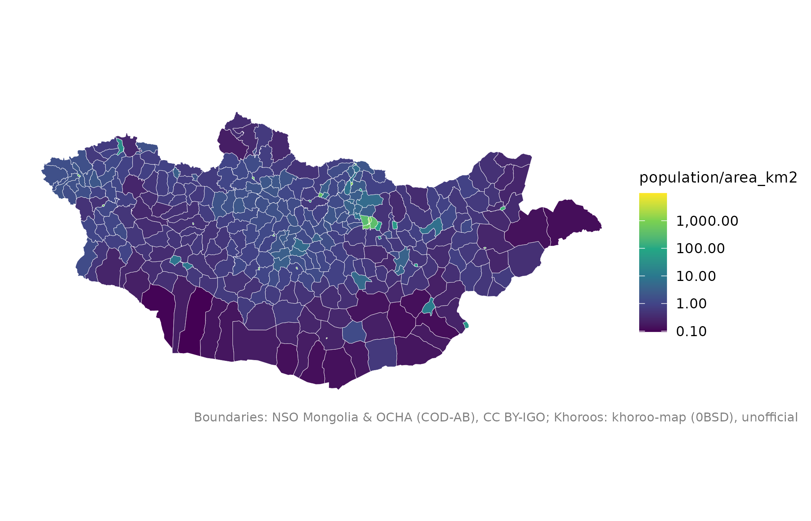

x-д нэгж бүр доторх растерийн нүдний нэгтгэлийг шинэ баганаар нэмнэ,
жишээ нь сум бүрийн нийт хүн ам, аймаг бүрийн дундаж өндөршил.
Usage
mn_zonal(
r,
x = NULL,
fun = c("sum", "mean", "min", "max", "median"),
name = "value"
)Arguments
- r
terraSpatRaster (нэг давхаргатай), жишээ ньmn_population()-ийн үр дүн.- x
Олигоны
sfобъект, жишээ ньmn_soums(). Анхдагч нь аймгууд.- fun
Нэгтгэх функцийн нэр:
"sum"(анхдагч),"mean","min","max"эсвэл"median".- name
Шинэ баганын нэр.
See also
Растерийн бусад давхарга:
mn_elevation(),
mn_landcover(),
mn_population()
Examples
soum_pop <- mn_zonal(mn_population(2025), mn_soums(), name = "population")
mn_map(soum_pop, fill = population / area_km2, trans = "log10")
